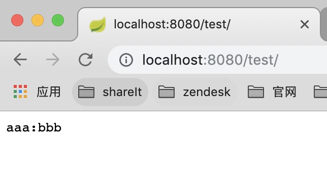

Spring Boot由众多Starter组成，随着版本的推移Starter家族成员也与日俱增。在传统Maven项目中通常将一些层、组件拆分为模块来管理， 以便相互依赖复用，在Spring Boot项目中我们则可以创建自定义Spring Boot Starter来达成该目的。
1. 创建一个 maven 工程
pom 文件如下
1 |
|
注意 依赖 spring-boot-configuration-processor 是为了在编译时生成 spring-configuration-metadata.json文件，此文件主要是给 IDE 使用，用于提示使用。
example: 如在Intellij idea中，当配置此 jar 相关配置属性在application.yml,你可以用cmd + 鼠标左键，IDE会跳转到你配置此属性的类中。
这里说一下 artifactId 命名问题， spring 官方Start 通用命名规则为 spring-boot-starter-{name}
spring 官方建议非官方 start 命名规范 {name}-spring-boot-starter
2. 编写 Service
1 | /** |
3. 编写属性类
1 | /** |
4. 编写自动配置类
1 | /** |
5. 添加spring.factories
在resources/META-INF/下创建 spring.factories 文件
1 | org.springframework.boot.autoconfigure.EnableAutoConfiguration=\ |
ok 完成， 执行 mvn clean install -DskipTests,打包安装到本地
6. Test
好了 来测试一下。
另外创建一个SpringBoot工程，在maven中引入这个starter依赖， 然后在单元测试中引入这个Service看看效果。
pom文件 引入依赖
···xml
<groupId>com.majm</groupId> <artifactId>sample-spring-boot-starter</artifactId> <version>1.0.0-SNAPSHOT</version>
···在
application.yml中 添加属性1
2
3
4com.service:
enabled: true
name: aaa
desc: bbb
编写 Controller1
2
3
4
5
6
7
private ExampleService exampleService;
("/test")
public Object getUser() {
return exampleService.desc();
}
返回结果如下

OK！
总结
总结下Starter的工作原理:
- Spring Boot在启动时扫描项目所依赖的JAR包，寻找包含
spring.factories文件的JAR包 - 根据
spring.factories配置加载AutoConfigure类 - 根据
@Conditional注解的条件，进行自动配置并将Bean注入Spring Context